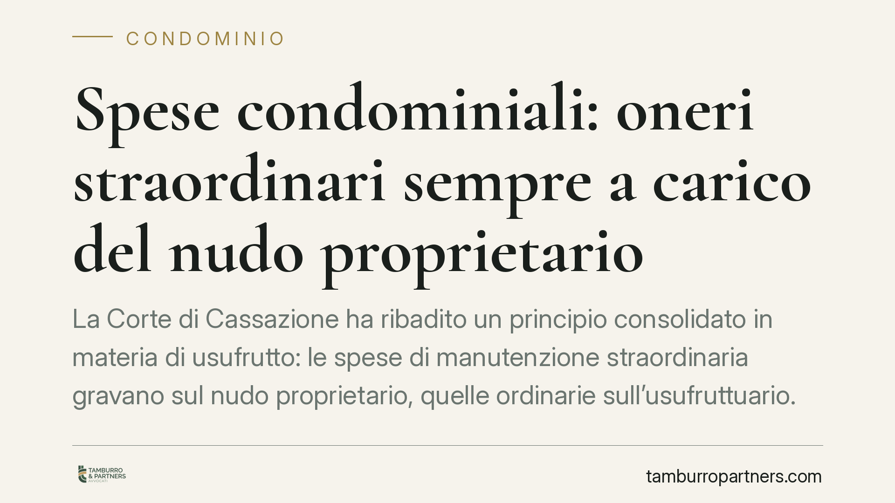

Spese condominiali: oneri straordinari sempre a carico del nudo proprietario
La Corte di Cassazione ha ribadito un principio consolidato in materia di usufrutto: le spese di manutenzione straordinaria gravano sul nudo proprietario, quelle ordinarie sull'usufruttuario. Un criterio di ripartizione fissato dal Codice civile che l'assemblea condominiale non può modificare. La decisione chiude un contenzioso sorto in un condominio di Agrigento e offre indicazioni pratiche a chi gestisce immobili in regime di usufrutto.

Il caso
La vicenda nasce da un condominio di Agrigento. Una Srl, nuda proprietaria di un'unità immobiliare, contesta l'imputazione di alcune spese. La questione attraversa il Tribunale di Agrigento e la Corte d'Appello di Palermo, fino ad approdare in Cassazione, che conferma l'orientamento tradizionale (ordinanza richiamata dalla fonte; estremi in corso di verifica).
Il punto controverso è sempre lo stesso: quando un immobile è gravato da usufrutto, chi paga le spese condominiali? E soprattutto, l'assemblea può decidere diversamente?
Inquadramento normativo
La risposta è nel Codice civile. L'art. 1004 c.c. pone a carico dell'usufruttuario le spese relative alla custodia, all'amministrazione e alla manutenzione ordinaria della cosa. L'art. 1005 c.c., invece, attribuisce al nudo proprietario le riparazioni straordinarie, definite come quelle necessarie ad assicurare la stabilità dei muri maestri e delle volte, la sostituzione delle travi, il rinnovamento, per intero o per una parte notevole, dei tetti, solai, scale, acquedotti, muri di sostegno o di cinta.
Lo stesso art. 1005 c.c. prevede un meccanismo di riequilibrio: l'usufruttuario deve corrispondere al nudo proprietario, durante l'usufrutto, l'interesse legale sulle somme spese per le riparazioni straordinarie. La logica è intuitiva. Chi gode del bene (l'usufruttuario) beneficia anche dell'intervento straordinario eseguito dal nudo proprietario, e per questo ne compensa il costo attraverso gli interessi, senza però sopportarne l'esborso in conto capitale.
Si tratta di un criterio di ripartizione inderogabile sul piano dei rapporti interni tra usufruttuario e nudo proprietario. Una delibera assembleare che pretendesse di spostare l'onere della manutenzione straordinaria sull'usufruttuario sarebbe, su questo specifico profilo, priva di effetto tra le parti.
Rapporti interni e rapporti con il condominio
Occorre distinguere due piani che spesso vengono confusi.
I rapporti interni tra usufruttuario e nudo proprietario sono regolati dagli artt. 1004 e 1005 c.c., come visto.
I rapporti con il condominio sono invece disciplinati dall'art. 67 disp. att. c.c., che regola, tra l'altro, la posizione di usufruttuario e nudo proprietario verso l'amministrazione condominiale. Nel sistema delineato dalla norma, l'amministratore imputa le spese ordinarie all'usufruttuario e le spese straordinarie al nudo proprietario, in coerenza con la ripartizione del Codice civile. Non esiste, come regola generale, una solidarietà piena tra i due soggetti per qualsiasi tipo di spesa: la responsabilità segue la tipologia dell'onere. Ipotesi di coobbligo restano circoscritte ai casi specifici previsti dalla legge o dalla giurisprudenza, e non vanno generalizzate.
Il nodo della qualificazione
Il vero terreno di contenzioso non è il principio, pacifico, ma la qualificazione dell'intervento. Stabilire se una determinata opera sia manutenzione ordinaria o straordinaria non è sempre immediato.
Il rifacimento di una facciata, la sostituzione di un impianto, il consolidamento strutturale: sono categorie che in astratto appaiono chiare, ma che nella pratica presentano zone grigie. Un intervento qualificato come "ordinario" nella delibera può in realtà avere natura straordinaria, e viceversa. Da qui nascono le liti, perché l'etichetta attribuita in assemblea non vincola la natura reale dell'opera.
La valutazione va condotta caso per caso, guardando alla consistenza e alla finalità dell'intervento, non alla definizione formale adottata nel verbale.
Implicazioni pratiche
Per chi detiene la nuda proprietà, la conferma è tranquillizzante solo in parte: resta esposto agli oneri straordinari, spesso i più onerosi, senza poter contare su una diversa ripartizione decisa dall'assemblea.
Per l'usufruttuario, l'attenzione va posta sul perimetro delle spese ordinarie e sull'obbligo di corrispondere gli interessi legali ex art. 1005 c.c. in caso di interventi straordinari eseguiti dal nudo proprietario.
Per l'amministratore, la corretta imputazione delle spese è essenziale per evitare impugnazioni e azioni di recupero verso il soggetto sbagliato.
Cosa fare in concreto
- Verifica il titolo: accerta chi è usufruttuario e chi nudo proprietario prima di imputare qualsiasi spesa, consultando la visura catastale aggiornata.
- Qualifica l'intervento: distingui tra manutenzione ordinaria e straordinaria in base alla natura reale dell'opera, non alla definizione usata nel verbale.
- Controlla le delibere: le decisioni assembleari non possono modificare la ripartizione interna tra i due soggetti; impugna quelle che lo pretendono nei termini di legge.
- Documenta gli esborsi: conserva fatture e giustificativi delle riparazioni straordinarie, utili anche per il calcolo degli interessi legali dovuti dall'usufruttuario.
- Nei casi di qualificazione incerta è opportuna una valutazione tecnico-giuridica preventiva dell'intervento.
*Contributo informativo a cura di Tamburro & Partners Avvocati - Avv. Giuseppe Tamburro. Non costituisce parere legale.*
Ogni condominio ha una storia a sé.
Se gestisci un'amministrazione e vuoi un confronto su una specifica questione condominiale, scrivi allo studio. Ti rispondiamo entro un giorno lavorativo.